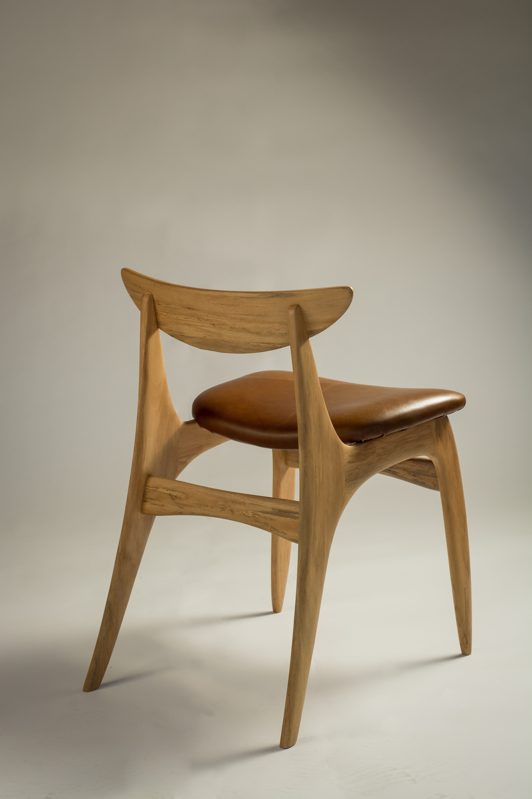
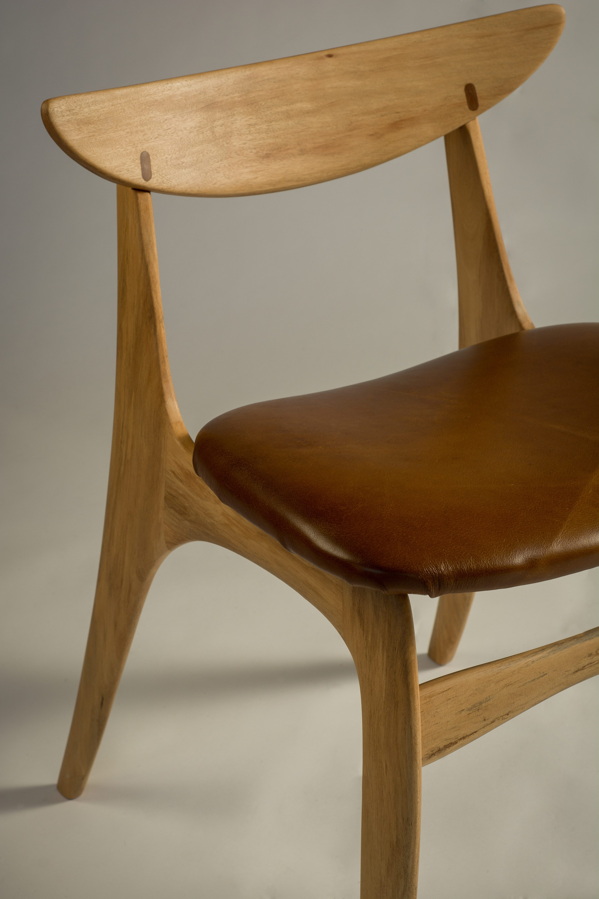

WF05
Dining Chair
A purposeful dining chair with a flowing frame and a silhouette designed to be seen from every side.



Interested in this piece or a related commission?
Enquire about WF05

Interested in this piece or a related commission?
Enquire about WF05